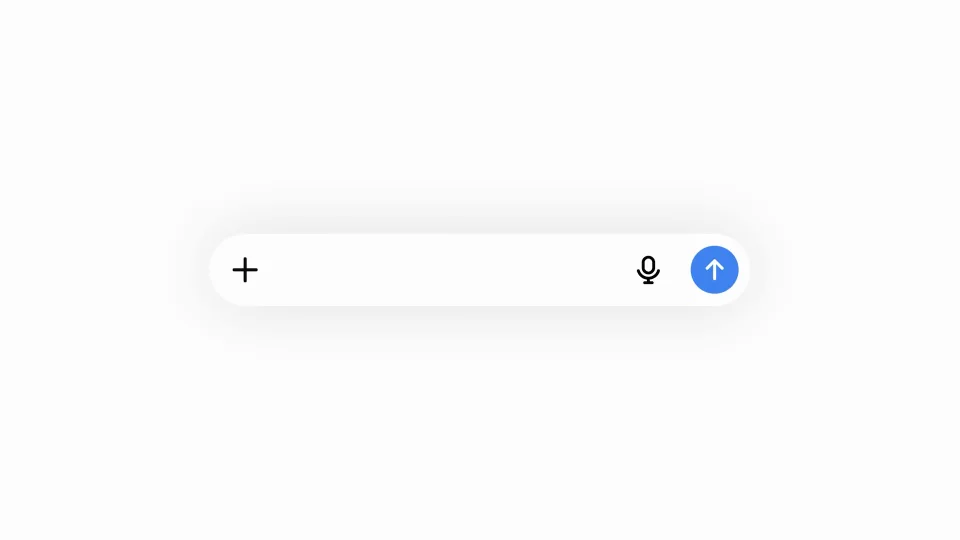
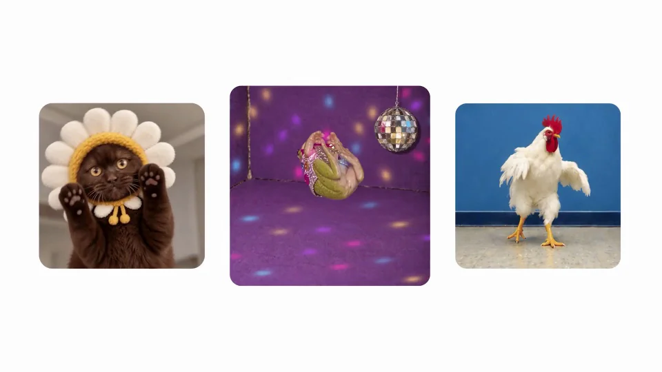
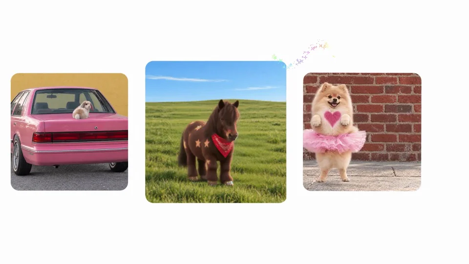
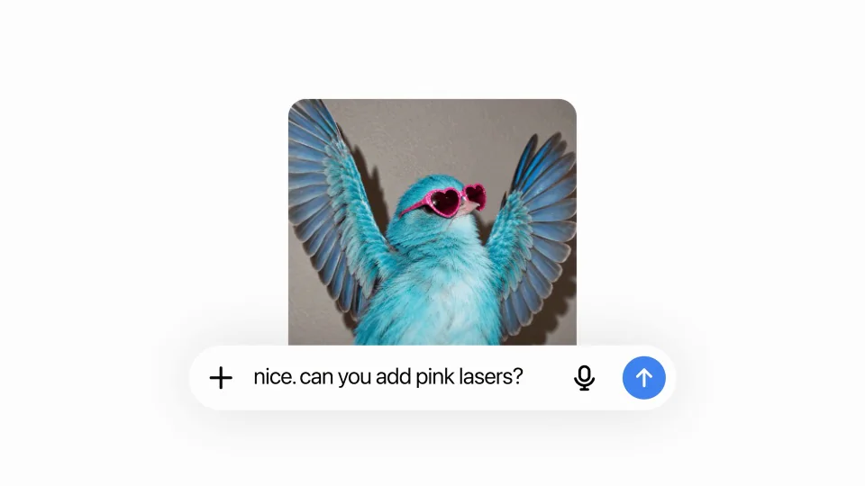
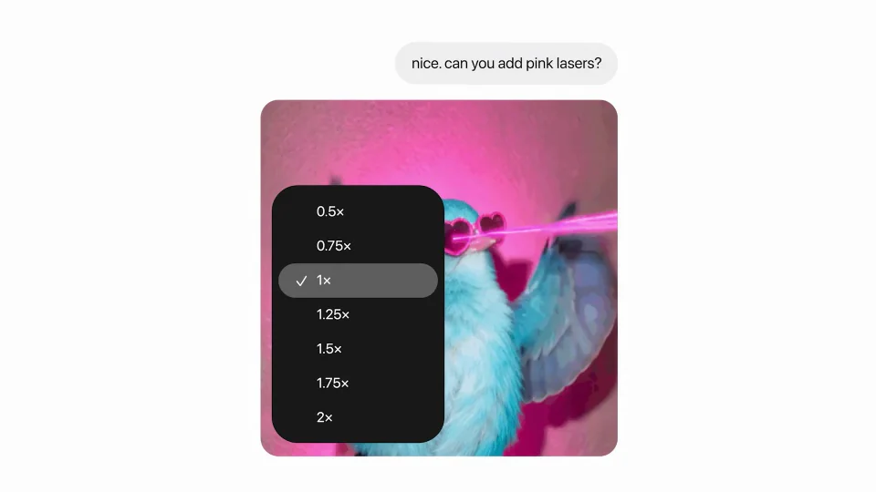

OpenAI / V326
ChatGPT Images 2.6
用一组动态图展示范围，再聚焦同一主体的修改。卡片负责浏览节奏，卡片里的角色负责内容变化。
构图与编排 可播放 · 可替换内容
整体编排规则示例
查看 HTML 源码
<!doctype html><html lang="zh-CN"><meta charset="utf-8"><meta name="viewport" content="width=device-width,initial-scale=1"><title>ChatGPT Images 2.6 · sequence</title><style>html,body{margin:0;width:100%;height:100%;overflow:hidden;background:#ffffff}canvas{display:block;width:100%;height:100%;object-fit:contain}</style><body data-mode="sequence"><canvas width="1000" height="600"></canvas><script src="data.js"></script><script src="common.js"></script><script src="scene.js"></script><script src="bridge.js"></script></body></html>画面元素输入气泡素材卡队列主体动物特效速度控件
MOTION LANGUAGE
动作与构图
局部动作 · 构图规则
01
容器统一，素材保持差异
白底上使用统一圆角和边距，彩色素材承担主要视觉变化。标题与提示用简洁无衬线，留在卡片外侧，避免盖住主体。
02
先看一个，再浏览一组
先看一个，再浏览一组规则示例
查看 HTML 源码
<!doctype html><html lang="zh-CN"><meta charset="utf-8"><meta name="viewport" content="width=device-width,initial-scale=1"><title>ChatGPT Images 2.6 · sequence</title><style>html,body{margin:0;width:100%;height:100%;overflow:hidden;background:#ffffff}canvas{display:block;width:100%;height:100%;object-fit:contain}</style><body data-mode="clip" data-start="2" data-end="13"><canvas width="1000" height="600"></canvas><script src="data.js"></script><script src="common.js"></script><script src="scene.js"></script><script src="bridge.js"></script></body></html>第一个动图建立内容形式，随后横移展开更多卡片。扇转时保留每张卡的边界，卡内动画照常播放，不跟随容器一起停住。
03
修改要落在刚才那个主体上
修改要落在刚才那个主体上规则示例
查看 HTML 源码
<!doctype html><html lang="zh-CN"><meta charset="utf-8"><meta name="viewport" content="width=device-width,initial-scale=1"><title>ChatGPT Images 2.6 · sequence</title><style>html,body{margin:0;width:100%;height:100%;overflow:hidden;background:#ffffff}canvas{display:block;width:100%;height:100%;object-fit:contain}</style><body data-mode="clip" data-start="13" data-end="23"><canvas width="1000" height="600"></canvas><script src="data.js"></script><script src="common.js"></script><script src="scene.js"></script><script src="bridge.js"></script></body></html>聚焦单张卡后再给局部要求，让同一角色增加特效。速度控件出现时，角色动作的快慢随之变化，卡片位置维持稳定。
04
回到集合，再收成单例
修改后的卡片回到素材集合，最后用一张代表作品和品牌收尾。
05
换素材时检查两个运动层级
可换角色、图片类别、特效与提示词。容器进出和内部动画分开安排：前者引导浏览，后者表达内容本身。
SEQUENCE
段落与节奏
点击段落，定位到上方编排示意。





画面参考 · 离散静帧
KEEP THE RELATIONSHIPS
制作其他主题
- 换主题应提供同一素材的前后编辑对照。
- 保留示例扩展→局部修改→参数调节。
制作约束
输入气泡 / 素材卡队列 / 主体动物 / 特效 / 速度控件
- 先展示静态需求到动态图，再用卡片横移扩展能力范围。
- 再次输入局部要求后同一主体增加特效，证明可迭代编辑。
- 卡片容器运动与卡内角色动画独立。